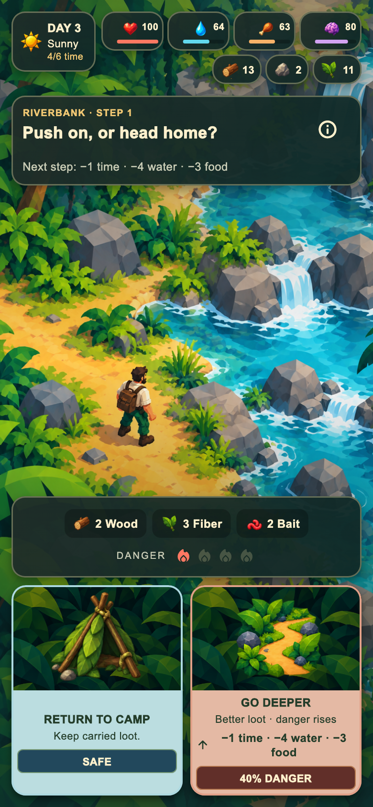
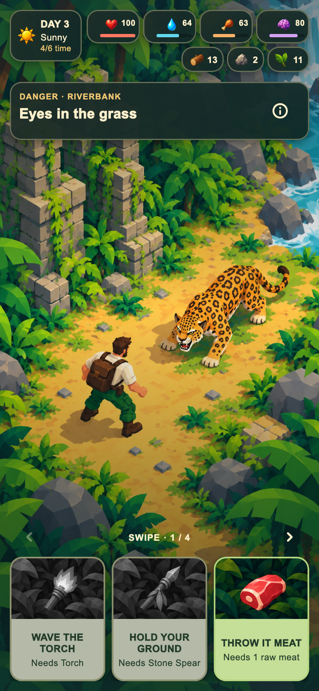
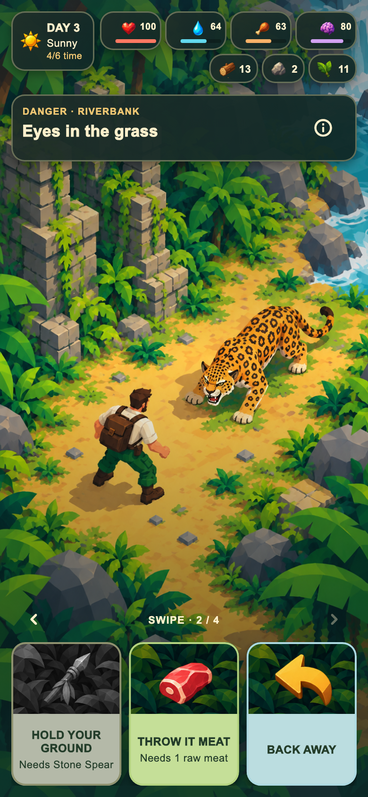
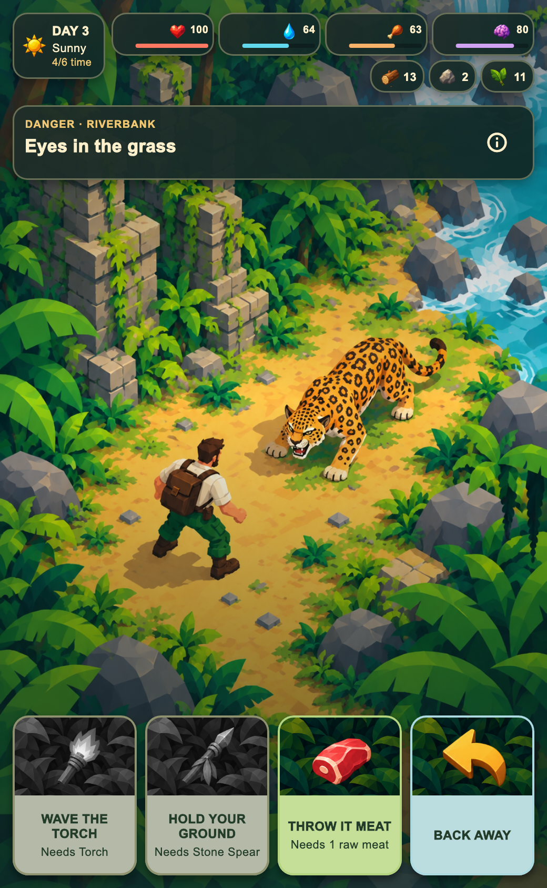
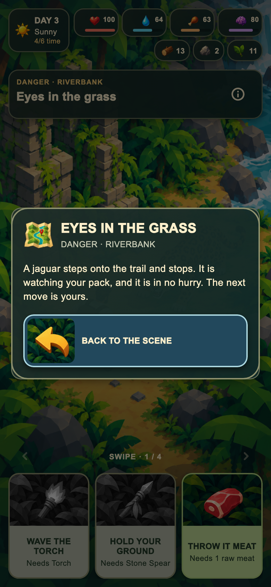

01
V3: rövid kártyák és választás utáni eredmény-popup
Az implementált mobilfelület 6 képe, sorban. Az encounter alján egyetlen, húzással és nyilakkal lapozható kártyasor van; a teljes helyzetleírás az információgomb mögött marad elérhető.
390 × 844 logikai mobilméret; a 04-es kép 520 × 844 széles nézet. 2× PNG-export. A teljes automatizált tesztkör még hátravan.
A teljes játék frissített galériája



520 px széles nézetben mind a négy kártya egyszerre látszik.
PNG letöltése